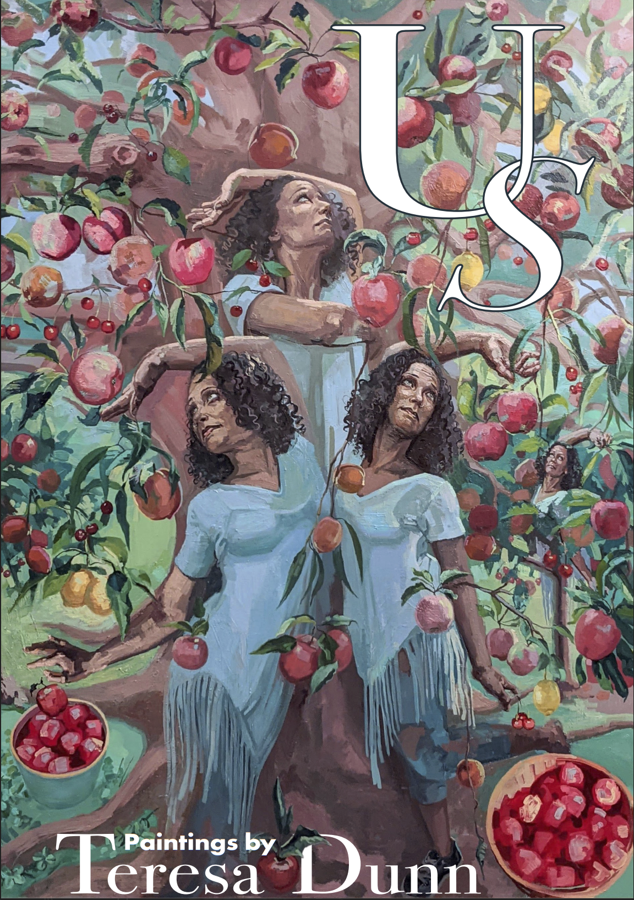
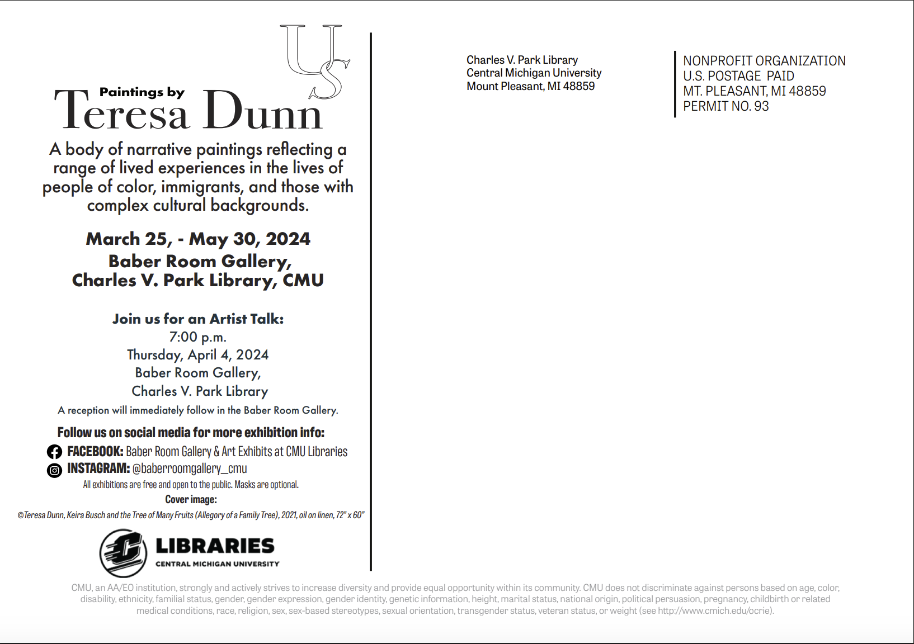

This project features a beautifully designed postcard created in Adobe Illustrator to promote a solo exhibition by the talented artist Teresa Dunn. The postcard serves as an invitation and a promotional piece, capturing the essence of Dunn's artistic style and the excitement of the upcoming exhibition.



Digital Media
2024
Original artwork